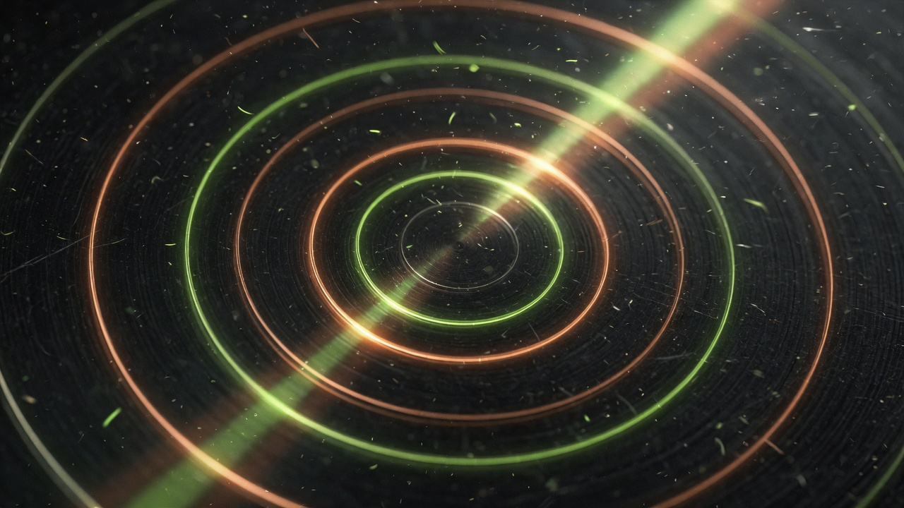

03 · Operating system · Multi-brand
StealthSeminar to n8n to GoHighLevel. Registrants, attendees, time-based zones, CTA clickers, no-shows. Then Conversation AI and voice so the hot lead is not a tag with no owner.

The problem
Someone who left at minute 12 and someone who stayed through the CTA are not the same contact. If both get the same sequence, sales wastes time and buyers feel the mismatch.
I built the webinar operating system used across client brands: event webhooks into n8n, CRM upserts that keep UTMs and join links, zone tags based on minutes watched, CTA click tags, and a no-show path. Migrated the legacy Zapier mirror onto n8n so the stack had one owner.
Zone model
Integrity
Every path writes source, medium, campaign, content, landing-page URL, and click IDs into the CRM. Join and replay links live on the contact, not in a webinar vendor the sales team cannot open. That is how a media buyer, a closer, and an automation can argue from the same record.
Same pattern on AML and APPS webinars: different zone thresholds, same operating idea. Follow-up is a function of watch behavior.